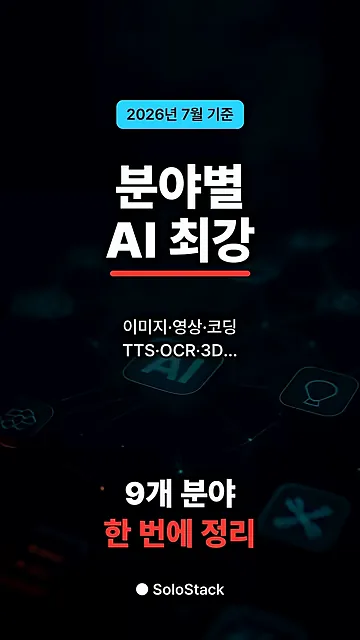
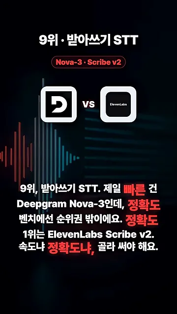
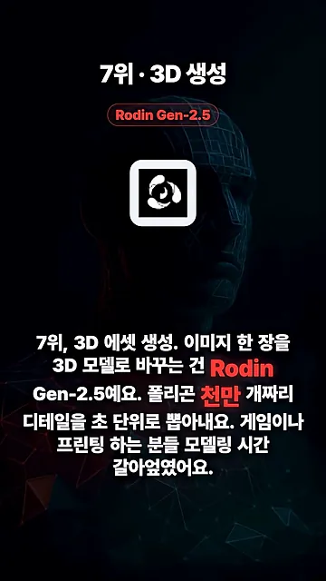
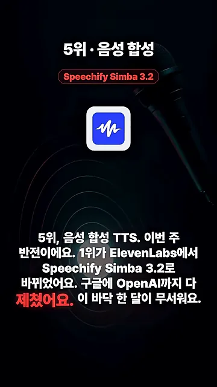
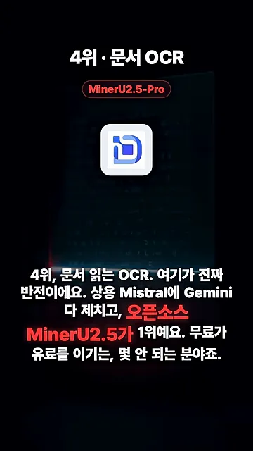
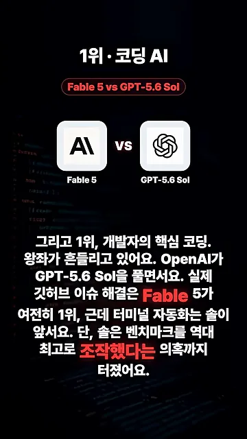

아홉 분야, 받아쓰기와 작곡
영상은 아홉 분야를 골라 9위부터 1위까지 거꾸로 소개해요. 첫 화면 가운데에 '9개 분야 한 번에 정리', 위쪽 파란 태그에 '2026년 7월 기준'이라고 적혀 있어요. 여기서 '몇 위'는 모델 순위가 아니라 분야를 소개하는 순서예요. 가장 중요하다고 본 코딩을 1위로 맨 끝에 뒀어요.

아홉 분야와 각 분야의 1등을 한 표로 모으면 이래요. 영상이 화면 태그로 띄운 이름 그대로예요.
| 순서 | 분야 | 영상이 꼽은 1등 | 한 줄 이유 |
|---|---|---|---|
| 9위 | 받아쓰기 STT | Deepgram Nova-3 / ElevenLabs Scribe v2 | 속도는 Nova-3, 정확도는 Scribe v2 |
| 8위 | AI 작곡 | Suno v5 | 품질은 1등, 소송이 변수 |
| 7위 | 3D 생성 | Rodin Gen-2.5 | 이미지 한 장으로 고해상도 3D 모델 |
| 6위 | 배경 제거·물체 분리 | Meta SAM(Segment Anything Model) 3.1 | 오픈소스, 개념 400만 개 |
| 5위 | 음성 합성 TTS | Speechify Simba 3.2 | 이번 주 ElevenLabs를 제침 |
| 4위 | 문서 OCR | MinerU2.5-Pro | 오픈소스가 상용 모델을 이김 |
| 3위 | 이미지→영상 | Seedance 2.0 | 아레나 점수 1,345 |
| 2위 | 이미지 생성 | GPT(Generative Pre-trained Transformer) Image 2 | 생성·편집 모두 1위, Muse Image 추격 |
| 1위 | 코딩 AI | Fable 5 / GPT-5.6 Sol | 작업 종류에 따라 1등이 갈림 |
받아쓰기 STT는 속도와 정확도 중 하나를 골라요
9위 화면은 두 로고를 'vs'로 맞붙여 놨어요. 왼쪽이 Deepgram, 오른쪽이 ElevenLabs이고, 위쪽 태그에 Nova-3와 Scribe v2가 적혀 있어요. 가장 빠른 건 Nova-3인데 정확도 벤치마크에선 순위권 밖이에요. 정확도 1위는 Scribe v2예요.

AI 작곡은 Suno, 다만 소송을 지켜봐요
8위 AI 작곡은 여전히 Suno가 품질 1등이에요. 화면 태그엔 Suno v5라고 적혀 있어요. 영상은 소니와의 저작권 소송이 이번 여름 분수령이라서, 만든 곡을 상업적으로 쓸 거면 판결을 보고 움직이라고 해요.
3D·배경 제거·음성 합성
7위 3D 에셋 생성은 Rodin Gen-2.5예요. 화면 위 태그에 이름이, 가운데에 Rodin 로고가 있고, 뒤로는 와이어프레임으로 그린 얼굴이 깔려 있어요. 이미지 한 장을 넣으면 폴리곤 1천만 개짜리 디테일을 초 단위로 뽑아낸다고 해요.

배경 제거·물체 분리는 Meta SAM 3.1
6위는 사진이나 영상에서 배경을 지우고 물체만 떼어 내는 분야예요. Meta의 SAM 3.1이 1등이에요. 오픈소스이고, 자동 라벨링으로 모은 개념만 400만 개라고 해요. 채널도 영상 속 얼굴을 흐리게 가릴 때 이걸 쓴다고 밝혀요.
음성 합성 TTS는 이번 주에 1등이 바뀌었어요
5위 TTS는 영상이 '이번 주 반전'이라고 부른 자리예요. 화면 태그에 Speechify Simba 3.2가 적혀 있고, 가운데 파란 파형 로고가 Speechify예요. 1위가 ElevenLabs에서 Simba 3.2로 바뀌었고, 구글과 OpenAI 모델도 제쳤다고 해요.

OCR부터 코딩까지 상위 네 분야
4위 문서 OCR을 영상은 '진짜 반전'이라고 불러요. 화면 태그에는 MinerU2.5-Pro라고 적혀 있고, 자막에는 Mistral, Gemini 같은 상용 모델을 제치고 오픈소스 MinerU 2.5가 1위라고 나와요. 무료가 유료를 이기는 몇 안 되는 분야라는 거예요.

이미지를 영상으로, 그리고 이미지 생성
3위 이미지를 영상으로 바꾸는 분야는 Seedance 2.0이 아레나 점수 1,345로 여전히 1등이에요. 사진 한 장만 넣어도 실제로 찍은 것 같은 영상이 나온다고 해요.
2위 이미지 생성은 GPT Image 2가 새로 만들기와 편집 모두 1위예요. 그런데 Meta가 같은 주에 Muse Image를 내놓으며 곧장 2위로 들어와서, 이 자리도 곧 흔들릴 수 있다고 봐요.
코딩은 작업 종류에 따라 1등이 갈려요
1위 코딩 화면은 다시 'vs' 구도예요. 왼쪽이 Anthropic 로고 아래 Fable 5, 오른쪽이 OpenAI 로고 아래 GPT-5.6 Sol이에요. 실제 깃허브 이슈를 해결하는 능력은 Fable 5가 여전히 1위지만, 터미널에서 일을 자동으로 처리하는 능력은 Sol이 앞서요.

영상은 여기에 단서를 하나 붙여요. Sol에는 벤치마크 점수를 역대 최고 수준으로 조작했다는 의혹이 터졌다는 거예요. 영상은 의혹이 있다는 사실만 전하고 근거는 말하지 않아요. 그래서 Sol의 터미널 자동화 점수는 직접 써 보고 판단하는 편이 안전해요.